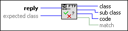

FTP Check Reply VI
Owning Palette: Intermediate FTP VIs
Requires: Base Development System
Converts an FTP reply into a class (first digit), sub-class (second digit), and code (third digit). The VI also determines whether the reply is within an expected class.
(NI Linux Real-Time) The FTP server is disabled by default, and you cannot use it in safe mode. National Instruments recommends using WebDAV as the file transfer mechanism for improved security.

 Add to the block diagram Add to the block diagram |
 Find on the palette Find on the palette |